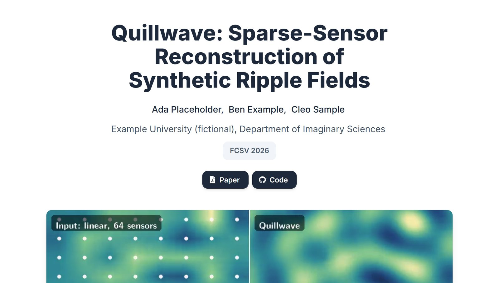
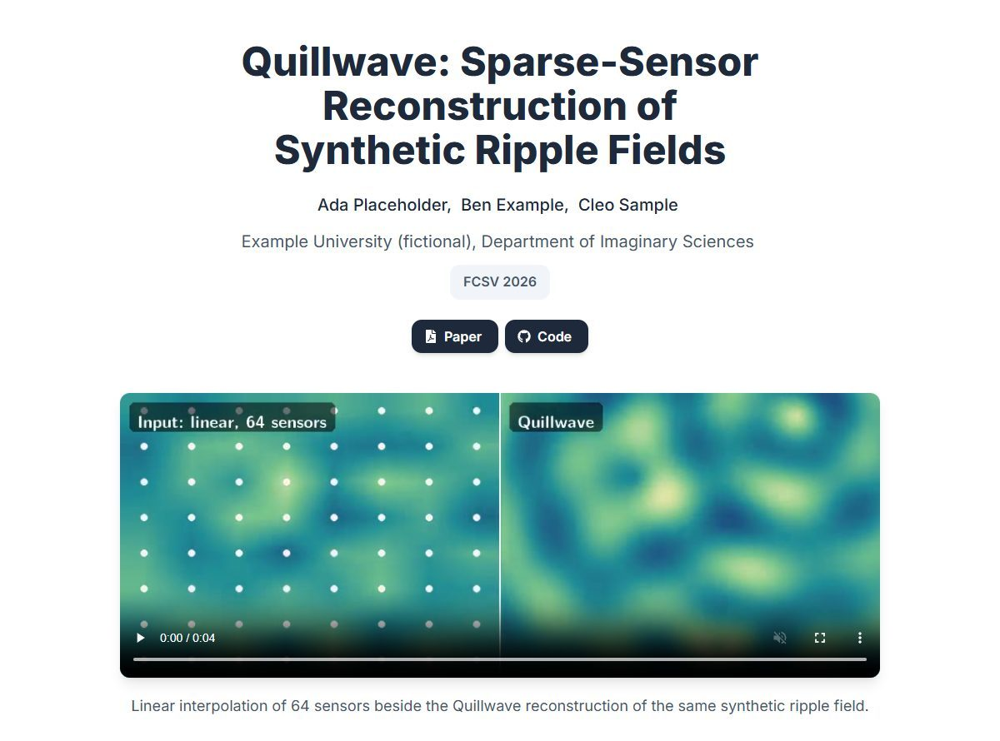
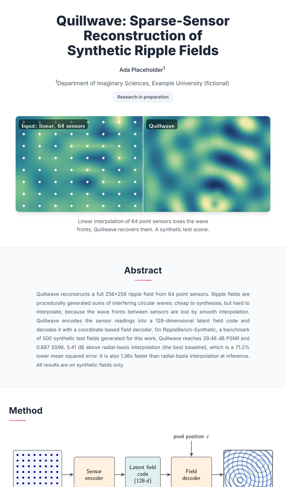
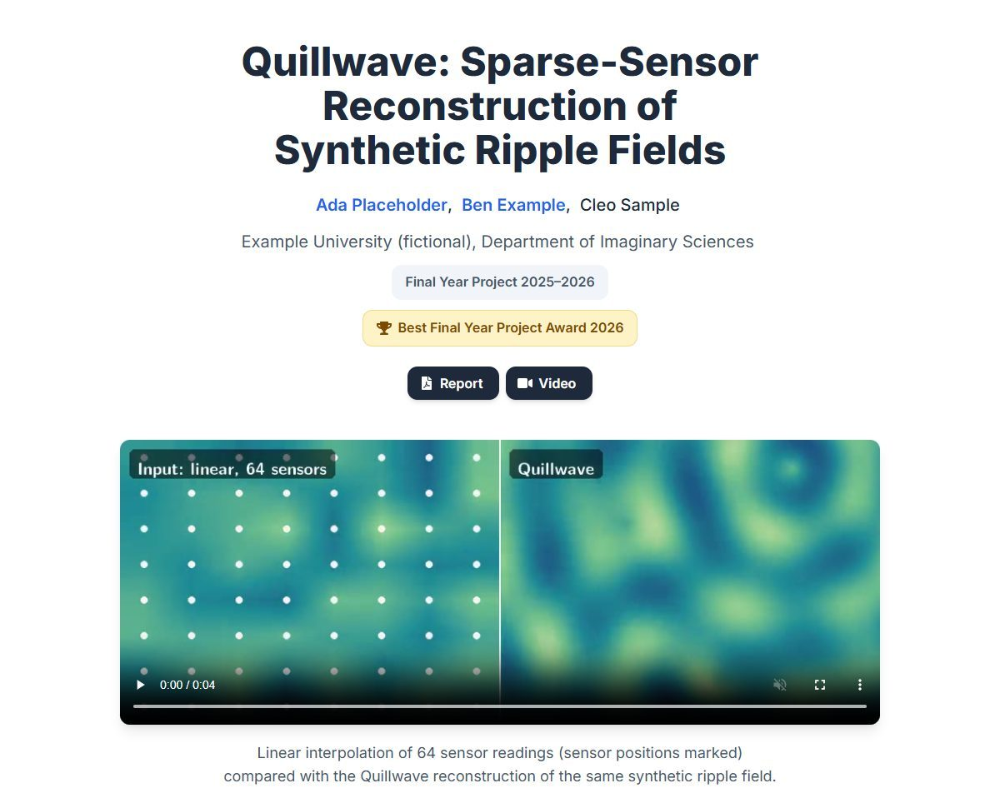
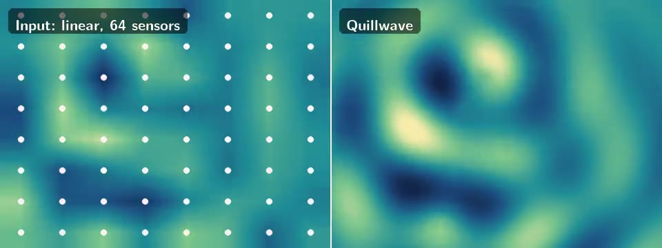

AcademicProject Page, an agent skill

Hand your agent a folder with the paper, figures and videos. It builds the project page and checks it in a real browser.
Install it in one line.
npx skills add royh1122/academic-project-page-skillThree live demos
-
Accepted paperPaper, code, video, poster and results, with the venue taken from the acceptance email.

-
Research in preparationNo public links yet, nothing invented to fill the gap, and the study's personal data left out.

-
Final-year projectA student project with the award its letter confirms, a report and an explainer video.

All three use the fictional Quillwave project from the skill's evaluation kit, so nothing real is shown. Each page is exactly what one run produced.
How it works
- paper/PDF, LaTeX
- figures/overview, results
- results/tables, loops
- video/explainer, captions
- poster/poster.pdf
- notes/experiment log
First, the folder as it is.
Make a project page for our paper “Quillwave: …”, accepted at FCSV 2026. The materials are in this folder. … Put the page in docs/.
Then one prompt.
It builds the page from what the folder verifies.
Page audit: pass
Interaction check: pass
Typography check: pass
80 numbers checked
against 11 sourcesThen it checks it before you see it.
What it checked
The skill's own checks, as they ran on the accepted-paper demo before it was handed back. Open a row to see what each one looks at.
The page is served under its repository path and opened at 375, 768 and 1440 px. The audit looks for missing files and placeholders, heading order, accessible names, contrast, fonts, overflow, alignment, letterboxed media and repeated images.
A script drives the page like a visitor: it opens and closes the figure viewer, steps through the carousels, opens the menus and tabs through every control to see that each one shows focus.
The fonts that actually loaded, and the sizes and weights of the title, authors and body, are compared with the theme, so a fallback font or a stray size shows up.
Every number on the page was looked up in the paper, the result tables and the README, at the page's precision. The one left over, 420, is the poster's file size in kilobytes.
Dense figures open in a viewer that works with the mouse, the keyboard and a screen reader, so a plot with small labels can be read on a phone.
Each video has a poster frame and can be seeked. Silent loops play muted and stop for visitors who prefer reduced motion; the explainer has controls, captions and a transcript.
The venue line comes from the acceptance email and the buttons from the links the prompt gave. A target venue, a finalist listing or a guessed link never reaches the page.
The agent saves the page in screen-height slices and opens each one before reporting, because a check can pass on a page that still looks wrong.
Tested against the same agent without it
The same prompts were given to the same agent with and without the skill, on the fictional evaluation kit. Small samples, reported as counted.
10 of 10
visual defects found when auditing a flawed page, against 5 without the skill.
9 + 1
defects fixed and one flagged when polishing that page, against 6 and 1 without it.
6 of 6
runs dropped a caption claim the data contradicts. Without the skill, 2 of 5 kept it.
None
of the runs published a video showing a person's name, ID and plate. Without the skill, one of two did.
8 to 9
zoomable figures on each paper page, against none without the skill.
How the evals work →
The kit, the answer keys and every count.

Try it on your project
Install it, put your materials in a folder, and ask for a project page in one prompt. Tell it what only you know: authors, verified links and awards, and what may be public.
npx skills add royh1122/academic-project-page-skill